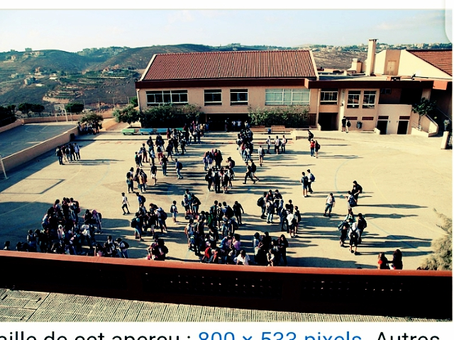
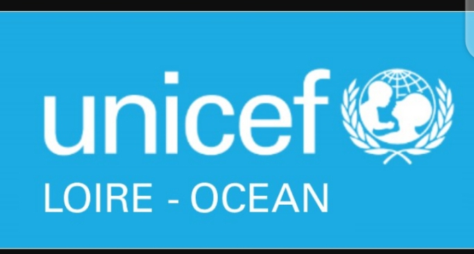

presentation du cours scolaire du lycee mwandu |
|  |
photo prise avec un drone |
|
La ville accueille un important marché local,
et possède un aéroport (code AITA : BNC).
Elle fut le théâtre de violents affrontements
en 2001 au cours de la Deuxième guerre du Congo.
Cette ville a permis
au gouvernement central de Kinshasa de reprendre le contrôle militaire et
administratif de l'est du
pays pendant la guerre d'agression menée par les
pays voisins qui souhaitaient la balkanisation
de la République
|
Liste des options |
Commerciale gestionphysiquepedagogieagronomie
|
démocratique
du Congo afin de
contrôler les
republiquettes
|
Ministre de l'epsp |
Aide humanitaire |
|
 |